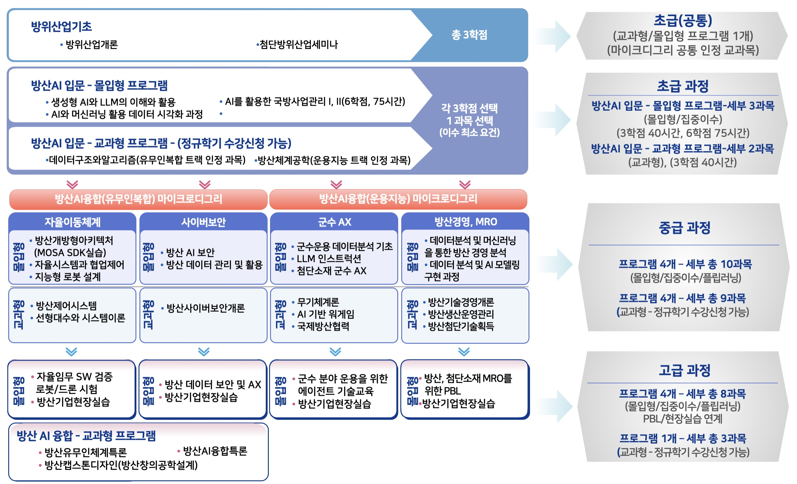

개별 무기체계를 넘어 이동 플랫폼 간 유기적 통제 및 임무 자동화 역량을 학습합니다.
Advanced Industry Bootcamp
K-방산에 적용하는 AI 인재 양성 부트캠프
미래방산 발전방향과 현장 목소리를 바탕으로 자율이동체계, 방산경영, 군수 AX 전환, 사이버보안 역량을 함께 기르는 실무형 교육 프로그램입니다.
Curriculum
AI 부트캠프 전체 커리큘럼
K-방산 현장 문제를 중심으로 AI 기초, 데이터 활용, 프로젝트 실습, 취업 연계까지 이어지는 교육 흐름입니다.

AI 부트캠프
홈페이지 바로가기
AI 부트캠프 공식 홈페이지에서 자세한 안내를 확인할 수 있습니다.
Program
첨단산업 인재양성 부트캠프(AI)
유무인 복합 전투 체계, 지휘결심 및 보안, 기술 경영, 공정 혁신처럼 방산 현장이 요구하는 AI 활용 역량을 짧고 밀도 높은 교육과 실습으로 연결합니다.
다중 데이터 기반 고도 통제와 사이버보안 역량을 함께 확보합니다.
설계부터 유지보수, 공급망 관리까지 아우르는 기술 경영 역량을 다룹니다.
AI 기반 기자재 공급망 관리와 생산성 향상으로 글로벌 경쟁력을 높입니다.
Talent
방산 AI 융합 인재상
방산 도메인 이해와 AI 활용 능력을 결합해 기술, 전략, 보안 관점에서 현장 문제를 해결하는 인재를 양성합니다.

무인체계 자동화 및 다중 플랫폼 통합 아키텍처 설계가 가능한 전문가
K-방산의 지속 가능한 성장을 위한 MRO 및 기술 경영 관리자

방산 데이터 보호 및 사이버 위협에 대응하는 보안 전문가
자율이동체계
방산경영·MRO
군수 AX 전환
사이버보안
Benefits
학생 지원 혜택
전공/융합전공 학생 대상 단계별 모집 및 트랙 맞춤형 선발 운영
마이크로디그리 연계, 프로젝트 수행, 현장실습 및 취업 매칭 지원
우수학생 장학금 및 학업장려금 확대를 통한 참여 유인 강화
책임지도 교수제와 기업 협업 프로젝트 기반 취업 코칭 운영